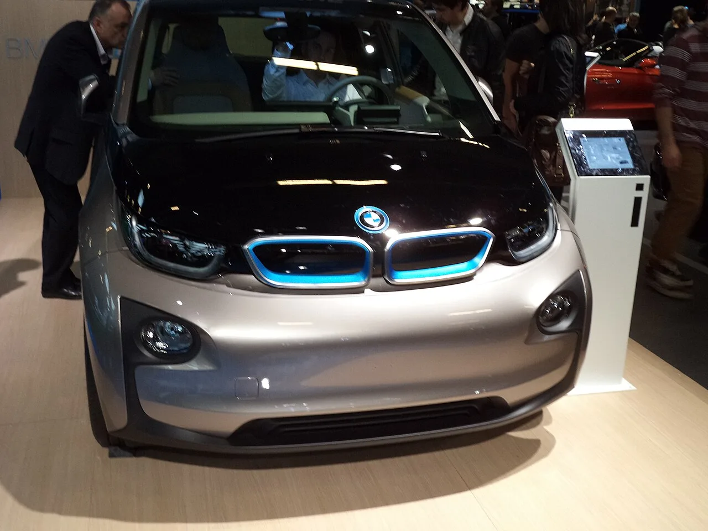

▲ BMW의 신형 순수전기 SUV iX3. BMW그룹은 2013년 i3 출시 이후 13년 만에 순수전기차 글로벌 누적 판매 200만 대를 넘어섰다
1. 2013년 i3에서 시작된 13년의 여정
BMW그룹의 순수전기차(BEV) 누적 판매량이 글로벌 기준 200만 대를 넘어섰다. 이 이정표는 BMW가 브랜드 최초의 양산형 순수전기차 'i3'를 2013년 출시한 지 약 13년 만에 달성한 수치다. 당시 i3는 탄소섬유강화플라스틱(CFRP) 차체와 독특한 디자인으로 화제를 모았지만, 시장에서는 다소 이른 시도로 평가받기도 했다. 그로부터 13년, BMW그룹은 iX·i4·i5·i7과 iX1·iX3, 미니 일렉트릭·에이스맨·컨트리맨 E 등으로 순수전기 라인업을 크게 확장했다.

▲ BMW i3. 2013년 출시되며 BMW그룹 전동화 역사의 출발점이 됐다 ⓒ Wikimedia Commons
플러그인하이브리드(PHEV)를 포함한 BMW그룹의 전동화 모델 전체 누적 판매량은 약 350만 대에 달한다. 순수전기차가 이 중 절반을 훌쩍 넘는 비중을 차지하고 있는 셈이다.

▲ BMW의 순수전기 플래그십 세단 i7. i3 이후 BMW그룹의 전동화 라인업은 소형차부터 플래그십까지 폭넓게 확장됐다 ⓒ Wikimedia Commons
2. 유럽에서 가속 중인 전동화 전환
2026년 상반기 기준 BMW그룹의 유럽 내 순수전기차 판매 비중은 전체 판매의 28%까지 올라왔다. 2분기만 놓고 보면 유럽 판매량이 전년 동기 대비 38% 증가한 8만1,445대를 기록하며 가파른 성장세를 보였다. 유럽연합의 탄소배출 규제 강화와 각국의 전기차 보조금 정책이 맞물리며 BMW그룹의 전동화 전환에 속도가 붙고 있는 것으로 풀이된다.
| 구분 | 수치 |
|---|---|
| 순수전기차(BEV) 글로벌 누적 판매 | 200만 대 (i3 출시 후 약 13년) |
| 전동화 모델(PHEV 포함) 누적 판매 | 약 350만 대 |
| 2026년 상반기 유럽 BEV 비중 | 28% |
| 2026년 2분기 유럽 판매 | 8만1,445대(전년 동기 대비 +38%) |
3. 국내 BMW·미니 전기차 판매, 1~8월 55% 급증
국내에서도 BMW그룹의 전동화 성장세는 뚜렷하다. 2026년 1~8월 국내 BMW의 순수전기차 판매는 5,895대로 전년 동기 대비 55% 증가했다. 같은 기간 미니(MINI)의 순수전기차 판매 역시 1,576대로 마찬가지로 55% 늘어났다. 특히 미니는 브랜드 전체 판매 중 순수전기차 비중이 29%를 넘어서며, 소형 프리미엄 브랜드 중에서도 전동화 전환이 가장 빠르게 진행되는 사례로 꼽힌다.
📍 미니 일렉트릭 라인업
미니의 순수전기 라인업은 해치백형 미니 일렉트릭(쿠퍼 SE), 크로스오버형 에이스맨 E, 컨트리맨 E로 구성된다. 특히 컨트리맨 E는 미니 최초의 준중형급 순수전기 SUV로, 상대적으로 넉넉한 실내 공간을 앞세워 국내에서도 판매 비중을 빠르게 늘려가고 있다.

▲ 미니 컨트리맨 E. 국내 미니 순수전기차 판매는 2026년 1~8월 기준 전년 대비 55% 증가한 1,576대를 기록했다 ⓒ Wikimedia Commons
4. 충전 인프라도 함께 확충
BMW그룹코리아는 전기차 판매 확대에 맞춰 자체 충전 인프라도 늘리고 있다. 현재 운영 중인 충전기는 3,155기 수준이며, 연말까지 4,000기로 늘린다는 목표를 세웠다. 판매 확대와 인프라 확충이 동시에 진행되는 모습으로, 전기차 구매를 망설이게 하는 가장 큰 요인 중 하나인 '충전 불안'을 낮추려는 전략으로 풀이된다.
✅ BMW그룹 전기차 200만 대, 이것만은 확인하세요
· 순수전기차 글로벌 누적 판매 200만 대, 2013년 i3 출시 후 약 13년 만
· 전동화 모델(PHEV 포함) 전체 누적은 약 350만 대
· 2026년 상반기 유럽 BEV 판매 비중 28%, 2분기 판매 전년比 38%↑
· 국내 BMW·미니 순수전기차 판매 1~8월 기준 각각 55%↑(5,895대, 1,576대)
· 국내 자체 충전기 3,155기 운영 중, 연말 4,000기 목표
5. 남은 과제와 전망
200만 대라는 숫자는 상징적이지만, BMW그룹 앞에 놓인 과제도 적지 않다. 테슬라·현대차그룹 등 경쟁사들도 신차 출시와 가격 경쟁력을 앞세워 시장 점유율 확대에 나서고 있는 만큼, BMW그룹은 노이에 클라쎄(Neue Klasse) 플랫폼 기반의 차세대 전기차로 다음 성장 국면을 준비하고 있다. 국내에서도 iX3를 시작으로 노이에 클라쎄 기반 신차들이 순차 투입될 예정이어서, 앞으로 몇 년간 판매 흐름에 변화가 있을지 주목된다. 관련 소식은 BMW코리아 공식 홈페이지에서 확인할 수 있다. 바로가기

▲ 전기차 충전소. BMW그룹코리아는 판매 확대와 함께 자체 충전 인프라도 연말까지 4,000기로 늘릴 계획이다 ⓒ Wikimedia Commons
6. 정리
BMW그룹은 2013년 i3로 전동화의 첫걸음을 뗀 지 13년 만에 순수전기차 글로벌 누적 판매 200만 대를 달성했다. 유럽에서는 판매 비중이 28%까지 올라왔고, 국내에서도 BMW·미니의 전기차 판매가 1~8월 기준 55%씩 급증하며 성장세를 이어가고 있다. 충전 인프라 확충과 노이에 클라쎄 기반 신차 투입이 예정된 만큼, BMW그룹의 전동화 전환은 당분간 더 속도를 낼 것으로 전망된다.